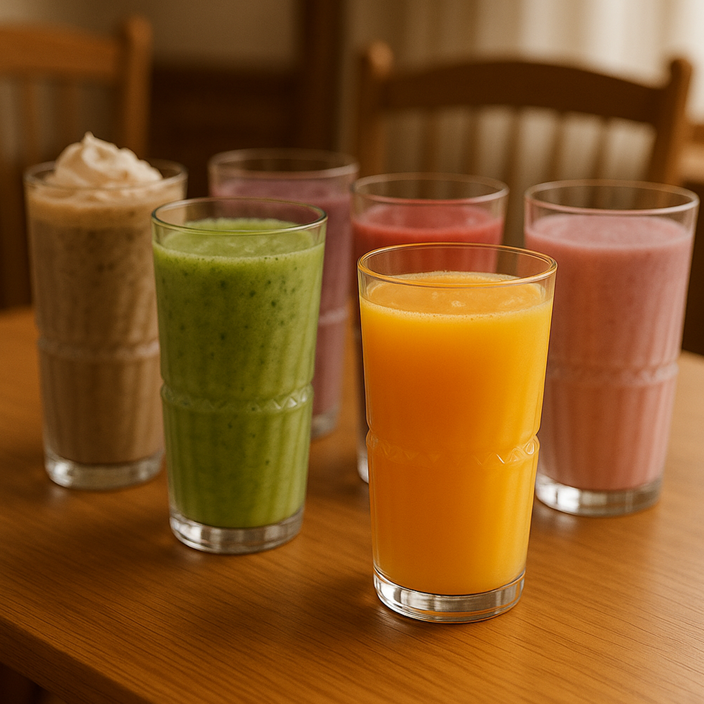
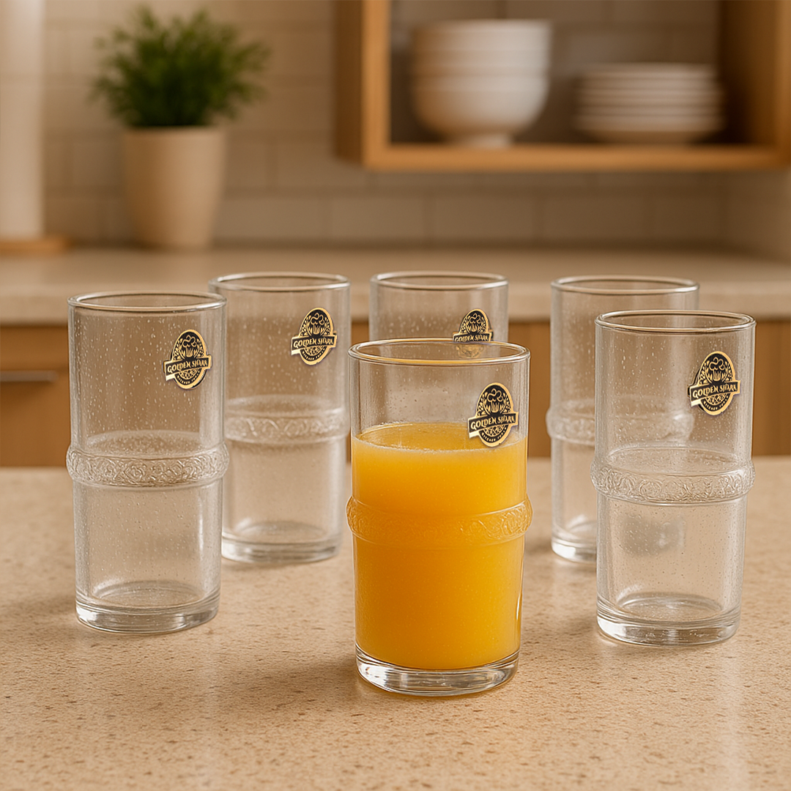

<!-- 
            <section id="section_3">
                <div class="container">
                    <div class="row">

                        <div class="col-lg-12 col-12 text-center">
                            <h6>Categories</h6>

                            <h2 class="mb-5">Preview at glance</h2>
                        </div>

                        <div class="col-lg-3 col-12">
                            <nav id="navbar-example3" class="h-100 flex-column align-items-stretch">
                                <nav class="nav nav-pills flex-column">
                                    <a class="nav-link smoothscroll" href="#item-1">Trays</a>
                                    <a class="nav-link smoothscroll" href="#item-2">Plates</a>
                                    <a class="nav-link smoothscroll" href="#item-3">Cups</a>
                                    <a class="nav-link smoothscroll" href="#item-4">Big Bowl</a>
                                    <a class="nav-link smoothscroll" href="#item-5">Little Bowl</a>
                                </nav>
                            </nav>
                        </div>
                        <div class="col-lg-9 col-12">
                            <div data-bs-spy="scroll" data-bs-target="#navbar-example3" data-bs-smooth-scroll="true" class="scrollspy-example-2" tabindex="0">
                                <div class="scrollspy-example-item" id="item-1">
                                    <div class="product-section row position-relative">
                                      <div class="col-lg-4">
                                        
                                      </div>
                                      <div class="col-lg-8">
                                        <h5>طقم صينيتين أكريليك  PC  من Golden Shark</h5>
                                        <p>الخامة: أكريليك نقي
                                         العدد: 2 قطعة
                                        ●   صينية كبيرة: 34x23 سم

                                        ●   صينية صغيرة: 29x18 سم
                                         تحمّل درجات الحرارة: من -40°C إلى 99°C
                                         آمن للغسيل في غسالة الصحون
                                         يُنصح بغسل المنتج قبل أول استخدام

                                        🛠 المواصفات:
                                        ●   صُنع من الأكريليك النقي المتين، المعروف بمقاومته للخدوش والكسر.

                                        ●   تصميم مستطيل أنيق بحواف مموجة ولمسة زخرفية أنثوية.

                                        ●   صينية خفيفة الوزن وسهلة الحمل والتخزين.

                                        ●   الحواف المرتفعة تُساعد على منع الانزلاق والانسكابات.

                                        🍽 الاستخدامات المتعددة:
                                        ●   مثالية لتقديم القهوة أو الشاي بطريقة مرتبة وأنيقة.

                                        ●   مثالية للتقديم اليومي في المطبخ أو الاستخدام الرسمي عند استقبال الضيوف.

                                        ●   تصلح للاستخدام في المناسبات أو حفلات العشاء أو التقديم في غرف المعيشة.

                                        ●   يمكن استخدامها أيضًا على التسريحة أو كمكان منظم للإكسسوارات أو أدوات التجميل.
                                        </p>
                                      </div>
                                      <a href="#order-form" class="order-now-btn">
                                        <i class="fas fa-shopping-cart me-1"></i> Order Now
                                      </a>
                                    </div>
                                </div>
                                <div class="scrollspy-example-item" id="item-2">
                                    <div class="product-section row">
                                        <div class="col-lg-4">
                                            
                                        </div>
                                        <div class="col-lg-8">
                                            <h5> طقم أطباق تقديم أكريليك  PC  – جولدن شارك (6 قطع)</h5>
                                            <p>الكمية: 6 قطع
                                             الأبعاد: قطر 24 سم – ارتفاع 2.5 سم
                                             يتحمّل حرارة من -40°C حتى 99°C
                                             آمن للغسل في غسالة الأطباق
                                            الوصف:
                                             طقم أطباق أنيقة بتصميم ورقة الشجر الفريد، مصنوع من أكريليك نقي وشفاف، بيجمع بين الجمال العملي والمتانة.
                                             كل طبق مثالي لتقديم المقبلات، الفاكهة، المعجنات، الحلويات أو حتى الضيافة اليومية.
                                            ✅ مقاوم للكسر والخدوش
                                             ✅ آمن للحرارة العالية والمنخفضة
                                             ✅ تصميم خفيف وسهل التخزين
                                            اختيار مثالي لكل بيت بيحب التقديم الراقي من غير قلق.
                                             </p>
                                        </div>
                                        <a href="#order-form" class="order-now-btn">
                                            <i class="fas fa-shopping-cart me-1"></i> Order Now
                                        </a>
                                    </div>
                                </div>
                                <div class="scrollspy-example-item" id="item-3">
                                    <div class="product-section row">
                                        <div class="col-lg-4">
                                            
                                        </div>
                                        <div class="col-lg-8">
                                            <h5>طقم أكواب عصير أكريليك PC شفاف  350 مل – 6 قطع من Golden Shark</h5>
                                            <p> 
                                             استمتع بتجربة تقديم أنيقة وعملية مع طقم أكواب العصير المصنوعة من الأكريليك النقي، بسعة 350 مل للكوب الواحد. يتميز بتصميم عصري شفاف ومتين يناسب مختلف الاستخدامات اليومية.
                                            💎 الخامات:
                                             مصنوع من أكريليك عالي الجودة، آمن، غير قابل للكسر وسهل التنظيف.
                                            📏 المقاسات:
                                             ارتفاع الكوب: 12 سم
                                             قطر الكوب: 7 سم
                                             السعة: 350 مل
                                            🔥 تحمّل درجات الحرارة:
                                             من -40 درجة مئوية إلى 99 درجة مئوية
                                            🧼 آمن لغسالة الأطباق
                                            🧃 مثالي لتقديم العصائر والمشروبات الباردة، وبيكمل أي سفرة أو تجمع عائلي بأناقة.

                                            </p>
                                        </div>
                                        <a href="#order-form" class="order-now-btn">
                                            <i class="fas fa-shopping-cart me-1"></i> Order Now
                                        </a>
                                    </div>


                                    <div class="product-section row">
                                        <div class="col-lg-4">
                                            
                                        </div>
                                        <div class="col-lg-8">
                                            <h5>طقم أكواب عصير أكريليك PC فاخر 400 مل – 6 قطع من Golden Sahrk</h5>
                                            <p> 
                                            📌 الوصف:
                                             مجموعة أنيقة مكونة من 6 أكواب مصنوعة من الأكريليك النقي بتصميم فاخر وعصري يضفي لمسة جمالية على مائدتك، سواء في الاستخدام اليومي أو المناسبات.
                                            📌 الاستخدامات:
                                             مثالية لتقديم العصائر، المياه، أو المشروبات الباردة والساخنة، سواء في البيت أو في الحديقة أو حتى في الرحلات.
                                            📌 المواصفات:
                                            ●   السعة: 400 مل

                                            ●   الطول: 14 سم

                                            ●   القطر: 6 سم

                                            ●   مصنوعة من الأكريليك النقي

                                            ●   تتحمل درجات حرارة من -40°C حتى 99°C

                                            ●   آمنة للغسل في غسالة الأطباق

                                            📌 المميزات:
                                            ●   تصميم فاخر مريح وسهل الإمساك

                                            ●   خفيف الوزن وسهل التخزين

                                            ●   مقاوم للكسر مقارنة بالزجاج

                                            ●   صديق للبيئة وآمن صحيًا


                                            </p>
                                        </div>
                                        <a href="#order-form" class="order-now-btn">
                                            <i class="fas fa-shopping-cart me-1"></i> Order Now
                                        </a>
                                    </div>
                                </div>
                                <div class="scrollspy-example-item" id="item-4">
                                    <div class="product-section row">
                                        <div class="col-lg-4">
                                            
                                        </div>
                                        <div class="col-lg-8">
                                            <h5> بولة تقديم شوربة أكريليك PC – قطعة واحدة من Golden Shark</h5>
                                            <p>اجمع بين الأناقة والعملية في تقديم الشوربة والسوائل الساخنة مع بولة التقديم الفاخرة من Golden Shark.
                                            ✅ المواصفات:
                                            ●   🥣 قطعة واحدة فقط

                                            ●   🌀 مصنوعة من الأكريليك النقي عالي الجودة

                                            ●   🔥 تتحمل درجات حرارة من -40° حتى 99°

                                            ●   🧼 آمنة للغسل في غسالة الصحون

                                            ●   ♻️ خفيفة الوزن، مقاومة للكسر، وصديقة للبيئة (BPA Free)

                                            🧂 الاستخدامات:
                                            ●   تقديم الشوربة الساخنة

                                            ●   تقديم السلطات الكبيرة أو الأطعمة المشتركة

                                            ●   مناسبة للعزائم أو الاستخدام اليومي

                                            ✨ تصميم عصري بلمعة زجاجية فاخرة ولمسة عملية تدوم طويلًا.
                                            </p>
                                        </div>
                                        <a href="#order-form" class="order-now-btn">
                                            <i class="fas fa-shopping-cart me-1"></i> Order Now
                                        </a>
                                    </div>
                                </div>
                                <div class="scrollspy-example-item" id="item-5">
                                    <div class="product-section row">
                                        <div class="col-lg-4">
                                            
                                        </div>
                                        <div class="col-lg-8">
                                            <h5>طقم بولات تقديم أكريليك  PC  شفافة – جولدن شارك (6 قطع)</h5>
                                            <p>الكمية: 6 قطع
                                             السعة: 300 مل
                                             الأبعاد: قطر 10 سم – ارتفاع 6 سم
                                             يتحمّل حرارة من -40°C حتى 99°C
                                             آمن للغسل في غسالة الأطباق
                                            الوصف:
                                             طقم متكامل من البول الشفافة المصنوعة من الأكريليك النقي، بيجمع بين الخفة في الوزن، والقوة في التحمل.
                                             مصممة بشكل عملي وانسيابي، بتناسب الاستخدامات اليومية في كل بيت عصري:
                                            ●   تقديم الفاكهة أو المكسرات

                                            ●   تحضير الصوصات والسلطات الصغيرة

                                            ●   تقديم الأيس كريم أو الحلويات
                                            ●   تقديم الشوربة الساخنة 

                                            خامة مقاومة للكسر، سهلة التنضيف، وتقدر تخزّنها بسهولة بفضل تصميمها المدمج. مثالية للاستخدام في البيت أو حتى في الخروجات والعزومات الخفيفة.
                                             </p>
                                        </div>
                                        <a href="#order-form" class="order-now-btn">
                                            <i class="fas fa-shopping-cart me-1"></i> Order Now
                                        </a>
                                    </div>
                                </div>
                            </div>
                        </div>

                    </div>
                </div>
            </section> -->
